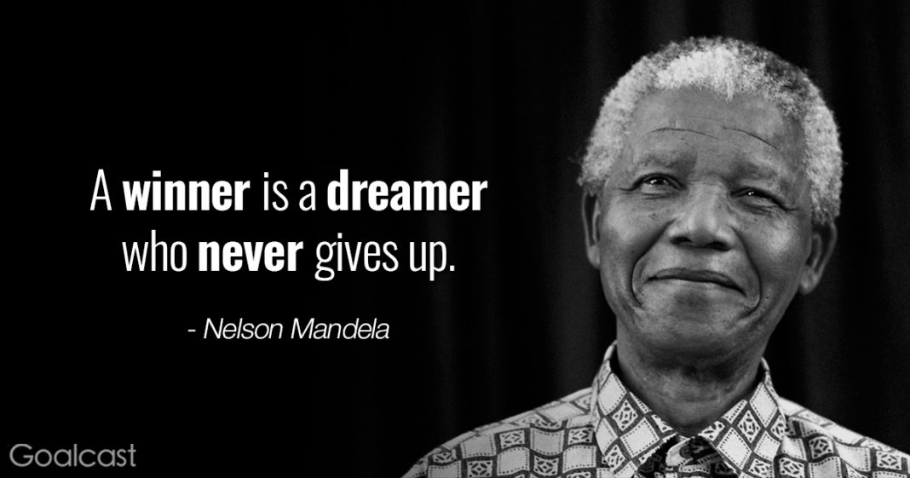

President Nelson Mandela
The Most respected African President

President Nelson Mandela of South Africa - Quote -
- 1918 - born on 18 July in the village of Mvezo in Umtata
- 1933 - Mandela began his secondary education at Clarkebury Methodist High School in Engcobo
- 1939 - Mandela began work on a BA degree at the University of Fort Hare, an elite black institution in Alice, Eastern Cape, with around 150 students. There he studied English, anthropology, politics, native administration, and Roman Dutch law in his first year, desiring to become an interpreter or clerk in the Native Affairs Department
- 1943–1949 - Mandela began studying law at the University of the Witwatersrand, where he was the only black African student and faced racism. At Sisulu's house, Mandela met Evelyn Mase, a trainee nurse and ANC activist from Engcobo, Transkei.Entering a relationship and marrying in October 1944.
- 1950–1954 - Defiance Campaign and Transvaal ANC Presidency: .Mandela took Xuma's place on the ANC national executive in March 1950,[71] and that same year was elected national president of the ANCYL.[72] In March, the Defend Free Speech Convention was held in Johannesburg, bringing together African, Indian, and communist activists to call a May Day general strike in protest against apartheid and white minority rule.
- 1956 -In December, Mandela was arrested alongside most of the ANC national executive, and accused of "high treason" against the state.
- 1962–1964 - Arrest and Rivonia trial: On 12 June 1964, justice De Wet found Mandela and two of his co-accused guilty on all four charges; although the prosecution had called for the death sentence to be applied, the judge instead condemned them to life imprisonment
- 1964 - 1988 - Mandela and his co-accused were transferred from Pretoria to the prison on Robben Island, remaining there for the next 18 years. Isolated from non-political prisoners in Section B, Mandela was imprisoned in a damp concrete cell measuring 8 feet (2.4 m) by 7 feet (2.1 m), with a straw mat on which to sleep .In 1985, Mandela underwent surgery on an enlarged prostate gland, before being given new solitary quarters on the ground floor
- 1988–1990 - Victor Verster Prison and release: Following the fall of the Berlin Wall in November 1989, de Klerk called his cabinet together to debate legalising the ANC and freeing Mandela
- 1994–1999 - Presidency of South Africa: The newly elected National Assembly's first act was to formally elect Mandela as South Africa's first black chief executive. His inauguration took place in Pretoria on 10 May 1994, televised to a billion viewers globally.
- 2004–2010 " Retiring from retirement ": n June 2004, aged 85 and amid failing health, Mandela announced that he was "retiring from retirement" and retreating from public life, remarking, "Don't call me, I will call you." In 2004, Mandela successfully campaigned for South Africa to host the 2010 FIFA World Cup, declaring that there would be "few better gifts for us" in the year marking a decade since the fall of apartheid.
- 2011–2013 - Illness and death: In February 2011, Mandela was briefly hospitalised with a respiratory infection, attracting international attention,[344][345] before being re-admitted for a lung infection and gallstone removal in December 2012. After suffering from a prolonged respiratory infection, Mandela died on 5 December 2013 at the age of 95, at around 20:50 local time (UTC+2) at his home in Houghton, surrounded by his family. Zuma publicly announced his death on television, proclaiming ten days of national mourning, a memorial service held at Johannesburg's FNB Stadium on 10 December 2013, and 8 December as a national day of prayer and reflection. Mandela's body lay in state from 11 to 13 December at the Union Buildings in Pretoria and a state funeral was held on 15 December in Qunu. Approximately 90 representatives of foreign states travelled to South Africa to attend memorial events.
Captured Life history of President Nelson Mandela
I have fought against white domination, and I have fought against black domination. I have cherished the ideal of a democratic and free society in which all persons will live together in harmony and with equal opportunities. It is an ideal which I hope to live for and to see realised. But if it needs be, it is an ideal for which I am prepared to die.
-Nelson Mandela-